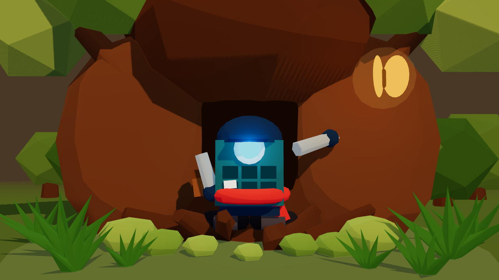
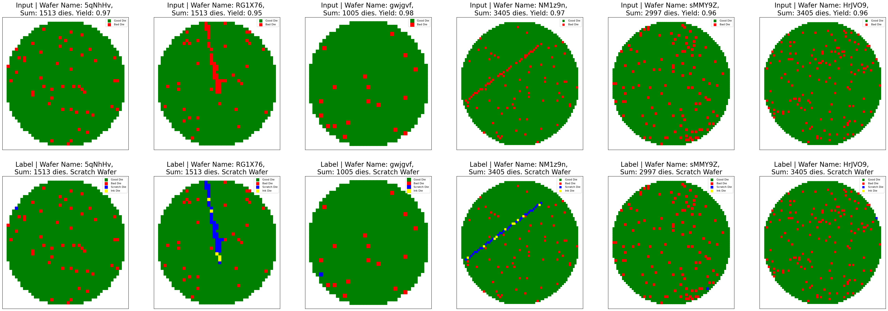
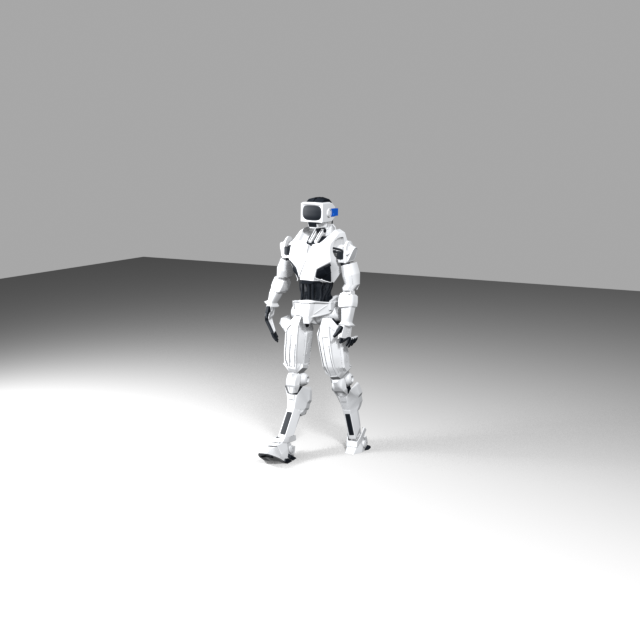
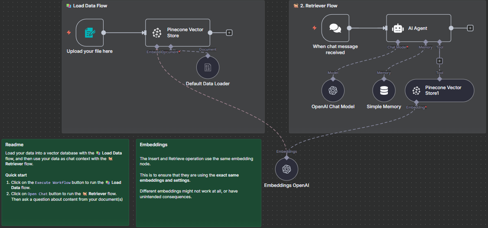

Education
B.Sc. Computer Science
Building a strong foundation in technology and problem solving.
EXPERIENCE / EDUCATION / SKILLS
Building a strong foundation in technology and problem solving.
Working on scalable web applications and learning modern development practices.
Personal experiments with LLMs, computer vision and creative AI tools.
Working with large datasets, ML pipelines and interactive dashboards.
Combining AI, 3D and interactive experiences to make meaningful things.
A selection of explorations at the intersection
of AI, software and creative visuals.

013D & EnvironmentsWorlds, atmosphere and imagined places
Show project previewA preview slot for stylized 3d environments, using an existing portfolio image. The finished case study, process and verified results can be added here.
MOCK CASE STUDY / PREVIEW CONTENTCharacter exploration and creative imagery
Show project previewA preview slot for ai characters & visuals, using an existing portfolio image. The finished case study, process and verified results can be added here.
MOCK CASE STUDY / PREVIEW CONTENTConnecting ideas into useful workflows
Show project previewA preview slot for creative automation, using an existing portfolio image. The finished case study, process and verified results can be added here.
MOCK CASE STUDY / PREVIEW CONTENT
04Data & AnalyticsExploring patterns in semiconductor data
Show project previewA preview slot for wafer defect analysis, using an existing portfolio image. The finished case study, process and verified results can be added here.
MOCK CASE STUDY / PREVIEW CONTENT
05Games & InteractiveRobots, worlds and playful interfaces
Show project previewA preview slot for interactive experiences, using an existing portfolio image. The finished case study, process and verified results can be added here.
MOCK CASE STUDY / PREVIEW CONTENT
06AI & GenerativeFrom information to useful answers
Show project previewA preview slot for retrieval & knowledge systems, using an existing portfolio image. The finished case study, process and verified results can be added here.
MOCK CASE STUDY / PREVIEW CONTENT06 EXPLORATIONS / MOCK SHOWCASE
HAVE SOMETHING IN MIND? LET’S TALK ↗